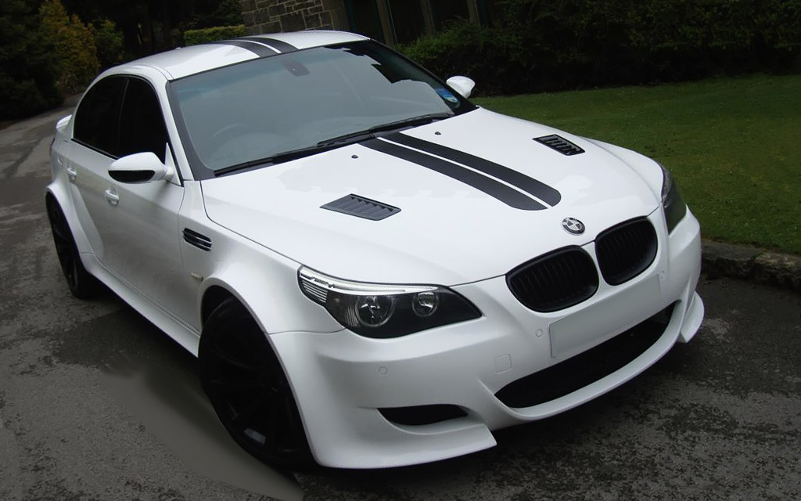
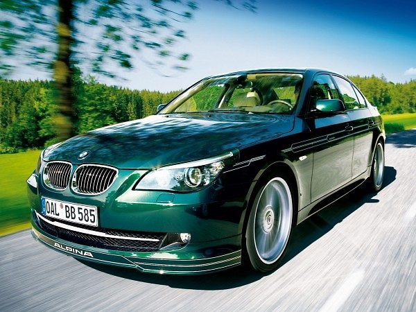

A Alpina B5 (E60) az első generációja Alpina B5 nagy teljesítményű executive autó, amelyet német autógyártó gyárt Alpina 2005-től 2011-ig BMW 5-es sorozat (E60), az autó szalon és kocsi karosszériában volt kapható. Az autó az Alpina B10 utódja.
Áttekintés:
A B5 az 545i-re épül, és 4,4 literes valvetronicjának módosított változatát használja V8 motor Alpina a H1 (megosztva a B7 és B6). A motor változtatásai közé tartozik a Steyr által gyártott Alpina-specifikus blokk, egy kovácsolt főtengely és alacsony a kompresszió Mahle dugattyúk. A motor megtartja a valvetronic rendszert és a centrifugális típusú kompresszor, amelyet az ASA készített az Alpina specifikációi szerint a kompresszor öv hajtja a főtengelyt, és a nyomás körülbelül 0,8 bar (11,7 psi). A kompresszor azért került hozzá, hogy kiküszöbölje az áramellátás késését a mindennapi használat során. A módosított motor teljesítménye 500 LE (368 kW; 493 LE) 5500 fordulat / perc mellett és 700 N⋅m (516 font) 4250 és 5250 fordulat / perc között. A motor vörös vonala 6000 fordulat / perc.
A B5 19 hüvelykes kovácsolt több küllős könnyűfém keréktárcsákkal és Michelin Pilot Sport 2 gumiabroncsokkal rendelkezik, amelyek elöl 245/40 ZR19, hátul 275/35 ZR19 méretűek. A B5-ös rendelkezik az Alpina saját felfüggesztési rendszerével, amelyet úgy terveztek, hogy normál vezetési körülmények között puha haladást biztosítson. Az autón használt fékeket a Közel-Kelet specifikációiból vették 760Li.
Teljesítmény:
A B5 tesztelt teljesítményadatai közé tartozik a 0–100 km / h (0–62 mph) gyorsulási idő 4,6 másodperc, a 0–161 km / h (0–100 mph) gyorsulási idő 9,5 másodperc, 0–201 km / h (0–125 mph) gyorsulási idő 14,5 másodperc és végsebesség 314 km / h (195 mph).
B5 S:
A 2008-ban bemutatott B5 S a B5 nagy teljesítményű változata. A B5 S egy továbbfejlesztett motorral rendelkezik, amelynek teljesítménye 530 LE (390 kW; 523 LE) 5500 fordulat / perc mellett és 724 N⋅m (534 font) nyomaték 4750 fordulat / perc fordulatszámon. A B5 szabvány elektronikus lengéscsillapító vezérlőrendszerét (EDC) újrakalibrálták és mellékelték Kényelem és Sport beállítások. 20 hüvelykes, több küllős alufelnikkel és Michelin pilóta sportabroncsokkal érkezett a fokozott tapadás érdekében. Az autó állítólagos teljesítményadatai közé tartozik az álló kilométeridő 22,1 másodperc, a 0–60 km / h (0–97 km / h) gyorsulási idő 4,6 másodperc és a maximális sebesség 317 km / h (197 mph).
{kind=link}
{kind=link}